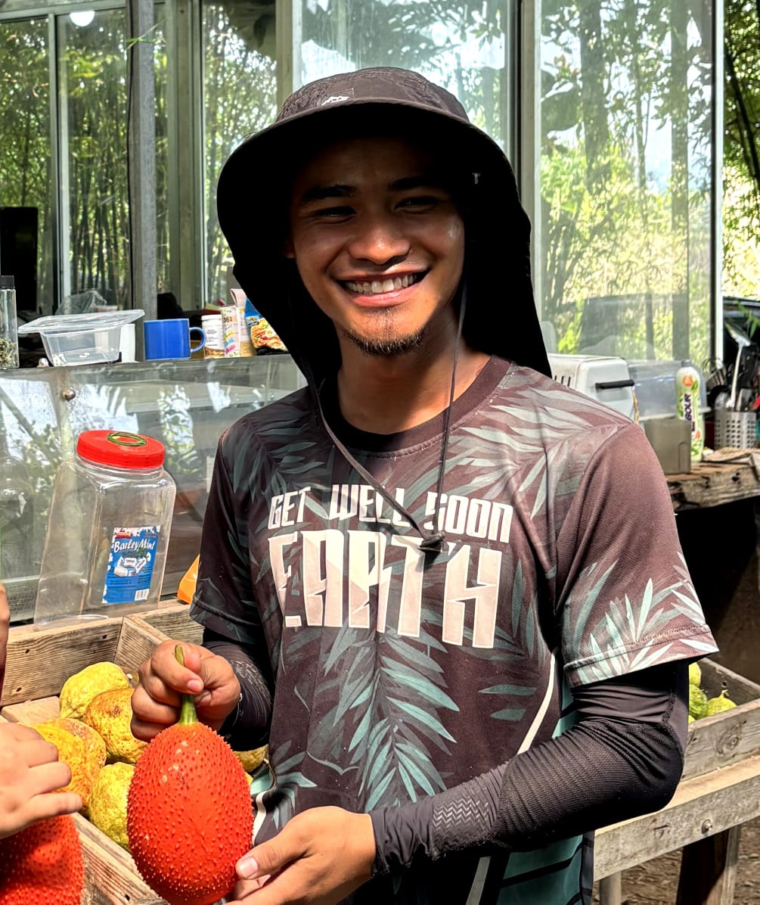

Background: Cheku Asjad Bin Cheku Mohd Sabri

Nama: Cheku Asjad Bin Cheku Mohd Sabri
Umur: 28 Tahun
Asal: Johor Bahru
Jawatan: Staff di Superfruit Valley
Tempoh Berkhidmat: 1 Tahun
Pendidikan: Beliau memiliki Diploma dalam bidang perladangan dari UITM Jasin Melaka. Seterusnya, beliau telah melanjutkan pelajaran ke peringkat Izajah Sarjana Muda dalam bidang sains pertanian di Universiti Malaysia Sabah.
Latar belakang pendidikan ini memberi beliau pengetahuan asas dan kemahiran dalam pengurusan tanaman serta teknik pertanian moden.
Latar Belakang Kerjaya: Beliau telah bekerja di Kebun Superfruit Valley selama satu tahun. Selain daripada itu, beliau juga telah mengusahakan ladang tersendiri yang memfokuskan kepada tanaman buah mangga Harumanis.
Pengalaman ini membolehkan beliau untuk mengaplikasikan ilmu yang dipelajari serta meningkatkan kemahiran dalam bidang pertanian secara praktikal.
Minat beliau dalam bidang ini bermula sejak daripada zaman pengajian dan terus berkembang sehingga kini sebagai satu kerjaya dan sumber pendapatan.